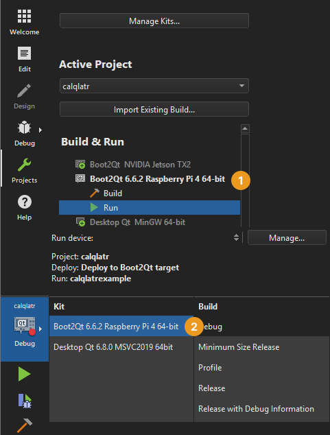

Previewing on Devices
To preview UIs on Android devices, you need to enable USB debugging on them and connect them to your system with a USB cable.
To preview UIs on Boot2Qt devices, you need to connect the devices to your system with a USB cable, or a wired or wireless connection, depending on the device, and configure connections to them. The necessary kits have been predefined and you only need to enable them for your current project.
Deploy configurations handle the packaging and copying of the necessary files to a location in a device where you want to run the executable at.
Note: To preview on a wirelessly connected device, select Preferences > Devices and connect the device.
To preview a UI on a device:
- In Projects > Build & Run, enable the kit predefined for the device type (1).
- Select the kit for the device in the kit selector (2).

- Select Build > QML Preview or press Alt+P.
Previewing on Android Devices
The USB debugging feature on Android devices enables creating connections to the devices from Qt Design Studio and running the preview utility on them.
Debugging is enabled in different ways on different Android devices. Look for USB Debugging under Developer Options. On some devices Developer Options is hidden and becomes visible when you tap the Build number field in Settings > About several times.
After you have enabled debugging, connect the Android device to the system with a USB cable.
The first time you preview a UI on devices, the preview utility is copied to them. This might take some time. Thereafter, previewing will get faster because only the UI files need to be copied to the device.
Previewing on Boot2Qt Devices
You can preview UIs on Boot2Qt devices. For a list of supported devices, see Boot2Qt: Supported Target Devices and Development Hosts.
You must configure the device as instructed in the Boot2Qt: Installation Guides.
Note: At the time of this writing, macOS is not supported as a development host for Boot2Qt. This means that you cannot preview UIs on devices if you are using Qt Creator on macOS. For more information, see Boot2Qt: Supported Development Hosts.